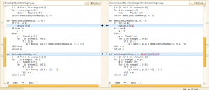

This Software Versioning Cheat Sheet has very basic information about the installation and usage of Subversion and Git. (The LaTeX Source Code is here.)
If you're at the KIT and you have SWT, then you'll probably need this command:
$ svn checkout https://svn.ipd.kit.edu/lehre/vorlesung/SWT1/SS12/stud/ SWT/ --username swt1
You will be asked for a password. I hope you remember it.
SVN
$ svn co URL LocalTarget --username yourUserName
Source: svn checkout
$ svn up
Source: svn update
$ svn log -l 4
Source: svn log
Updating the repository
You can update a SVN repository with this command:
$ svn up [path]
If you need to execute the command often, you might want to define an alias.
aliases are shorthands for long commands in the bash. To create a permanent
one, add the following line to your ~/.bashrc file:
alias swt='svn up /home/moose/Studium/SWT'
Now you only have to enter "swt" to execute "svn up /home/moose/Studium/SWT".
Nice diffs
You can modify your config file:
$ gedit ~/.subversion/config
and change diff-cmd to meld.
Compare revisions
$ svn diff -r 63:64
compares revision number 63 with revision number 64 with the tool you defined (see Nice diffs).
Git
Global configuration
$ git config --global user.name "Martin Thoma"
$ git config --global user.email info@martin-thoma.de
$ git config --global color.ui true
Nice diffs
If you want a GUI for git diff, then you should do the following:
Install meld:
sudo apt-get install meld
Go to /bin and create a Shell-Script called git-meld with the following content:
#!/bin/bash
meld "$2" "$5"
Make it executable:
chmod +x git-meld
Add it to your git configuration:
git config --global diff.external git-meld
Enjoy this experience when entering git diff:
{kind=link}

See also jeetworks.org for some other solutions.
Image diffs
Aki Koskinen posted a nice article on how to make image diffs with git. I only changed the diff program to StanAngeloff's simple-imagediff.py The most important steps are:
Tell git what images are:
$ git config --global core.attributesfile '~/.gitattributes'
$ cat .gitattributes
*.gif diff=image
*.jpg diff=image
*.png diff=image
Tell git how to deal with images in diffs:
$ git config --global diff.image.command 'simple-imagediff'
Add ~/.local/bin/simple-imagediff as an executable:
#!/usr/bin/env python
# Simple Image Diffs
# ==================
#
# How to Install
# --------------
#
# Download the script somewhere on $PATH as 'simple-imagediff' with +x:
#
# $ cd ~/bin
# $ wget -O simple-imagediff https://raw.github.com/gist/1716699/simple-imagediff.py
# $ chmod +x simple-imagediff
#
# Prerequisites
# -------------
#
# The script should work out-of-the box on Ubuntu 11.10. On other OS'es you may
# need to install PIL and Gtk3.
#
# Git Setup
# ---------
#
# In ~/.gitconfig, add:
#
# [diff "image"]
# command = simple-imagediff
#
# In your project, create .gitattributes file and add (this enables the custom
# diff tool above):
#
# *.gif diff=image
# *.jpg diff=image
# *.png diff=image
#
# Try It
# ------
#
# $ git diff path/to/file.png
#
# NOTE: file.png must be versioned and the working copy must be different.
import os
import sys
import Image
from gi.repository import Gdk, Gtk
class SimpleImageDiffWindow(Gtk.Window):
def __init__(self, left, right):
Gtk.Window.__init__(self, title="Simple Image Diff (%s, %s)" % (left, right))
self.set_default_size(640, 480)
align = Gtk.Alignment()
align.set_padding(10, 10, 10, 10)
box = Gtk.HBox(homogeneous=True, spacing=10)
box.add(self._create_image_box(left))
box.add(self._create_image_box(right))
align.add(box)
self.add(align)
self.resize(1, 1)
self.set_position(Gtk.WindowPosition.CENTER)
def _create_image_box(self, image_file):
box = Gtk.VBox(spacing=10)
frame = Gtk.Frame()
image = Gtk.Image()
image.set_from_file(image_file)
title = Gtk.Label(label="W: %dpx | H: %dpx" % Image.open(image_file).size)
frame.add(image)
box.pack_start(frame, True, True, 0)
box.pack_end(title, False, False, 10)
return box
def _halt(message, code):
sys.stderr.write("[ERROR] %s\n" % message)
sys.exit(0 << code)
def _verify_file_exists(target):
if not os.path.exists(target):
_halt("The file '%s' does not exists." % target, 2)
if __name__ == "__main__":
if len(sys.argv) < 3:
_halt("Not enough arguments.", 1)
_verify_file_exists(sys.argv[1])
_verify_file_exists(sys.argv[2])
app = SimpleImageDiffWindow(sys.argv[1], sys.argv[2])
app.connect("delete-event", Gtk.main_quit)
app.show_all()
Gtk.main()
GitHub
Preparation
Read the guide "Generating SSH keys" for more information on SSH and "Getting Started - First-Time Git Setup" for Git-specific questions.
cd ~/.ssh
ssh-keygen -t rsa -C "info@martin-thoma.de"
git config --global user.name "Martin Thoma"
git config --global user.email info@martin-thoma.de
Clone
Clone a GITHub repository:
git clone git@github.com:MartinThoma/matrix-multiplication.git
Snippets
Reset a single file to the latest revision on the server:
git checkout HEAD file/to/restore
Get the latest diff:
git diff HEAD @{1}
Resources
- Version Control with Subversion: a great explanation how to use subversion, e.g. svn export
- StackOverflow: Which files should be put under version control?
- GitHub: Remotes